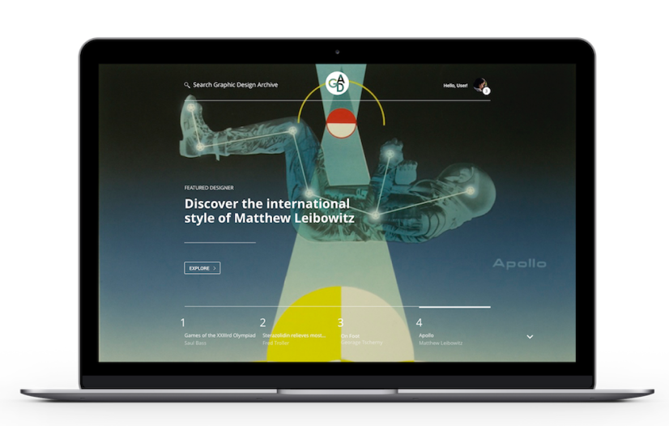

Hello! I’m
Jenna Shay
. I’m a graphic designer in San Francisco.
I draw from my multidisciplinary background in art history, fine art, and visual communication to create
designs
with impact and intention.
The Graphic Design Archive Reimagined
A site containing a plethora of inspirational images from design’s past got a 21st Century update for my MFA thesis.
